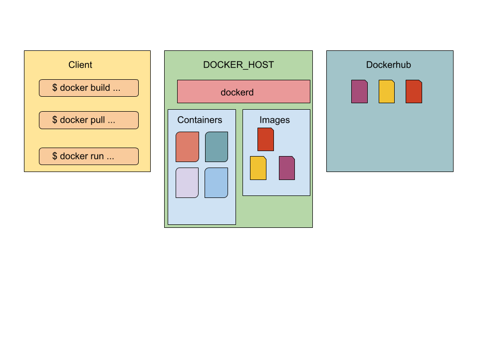

<!doctype html>
<html lang="sv">
<meta charset="utf-8" />
<title>vlinux kmom03</title>

<!-- Mithril HTML Slideshow styles -->
<link href="../../css/mithril-slideshow.css" rel="stylesheet" />

<!-- Code formatting using highlight.js -->
<link rel="stylesheet" href="../../css/default.css">
<link rel="stylesheet" href="../../css/tomorrow.css">
<script src="../../js/highlight.pack.js"></script>

<!-- Text formatting using Markdown through showdown.js -->
<script src="../../js/showdown.min.js"></script>

<style>
    h1 {
        border-bottom: 2px solid orange;
    }
</style>


<!-- Here comes the slides in order -->
<script data-role="slide" data-markdown type="text/html">
#vlinux kmom03
###Kenneth Lewenhagen, dbwebb
</script>


<!-- Slide -->
<script data-role="slide" data-markdown type="text/html">
#Agenda

* Docker vs VirtualBox (Container vs Virtual Machine)
* Permissions
* Bash

</script>


<!-- Slide -->
<script data-role="slide" data-markdown type="text/html">
#Docker vs VirtualBox

###Mål: "Att isolera en applikation och dess beroenden i en fristående enhet som kan köras var som helst."


</script>


<!-- Slide -->
<script data-role="slide" data-markdown type="text/html">
#VirtualBox

* Virtual Machines
* Type 2 Hypervisor (VM monitor) skapar och kör VMs
    * Abstraherar CPU, RAM, HDD
* Flera unika OS på en fysisk server
* Skapar overhead
* Tar mycket plats, lång tid att skapa/starta
* Kräver mycket resurser
* Svårt att hitta färdiga VMs

</script>


<!-- Slide -->
<script data-role="slide" data-markdown type="text/html">
#Docker

* Containers
* Ingen Hypervisor - app och OS delar resurser
* Körs ovanpå ett befintligt OS
* Underliggande OS spelar ingen roll
* Paketeras med delar som behövs
* Tar mindre plats

</script>


<!-- Slide -->
<script data-role="slide" data-markdown type="text/html">
#Vad består Docker av?

* Docker Engine
    * Klient - Server
    * docker CLI -> REST API -> docker daemon
* Docker Registry
    * dockerhub
* Docker Objects
    * images, containrar, volymer, nätverk

</script>


<!-- Slide -->
<script data-role="slide" data-markdown type="text/html">
#Docker daemon

* dockerd
* Lyssnar efter API requests
* Hanterar images, containrar, volymer, nätverk

</script>


<!-- Slide -->
<script data-role="slide" data-markdown type="text/html">
#Docker CLI

* Skickar kommandon till dockerd

</script>


<!-- Slide -->
<script data-role="slide" data-markdown type="text/html">
#Docker Registry

* Lagrar images
* Publikt/lokalt
* Dockerhub (default)

</script>


<!-- Slide -->
<script data-role="slide" data-markdown type="text/html">
#Docker Objects

* images
* containers
* (volymer, nätverk)

</script>


<!-- Slide -->
<script data-role="slide" data-markdown type="text/html">
#images

* Läsbar mall för att skapa en Docker container
* Lagersystem - bara toppen är skrivbar
* Varje instruktion i Dockerfile skapar ett lager i imagen
</script>


<!-- Slide -->
<script data-role="slide" data-markdown type="text/html">
#container

* Körbar instans av en image
* Förstörs när man stänger ner den

</script>


<!-- Slide -->
<script data-role="slide" data-markdown type="text/html">
#Docker arkitektur


</script>


<!-- Slide -->
<script data-role="slide" data-markdown type="text/html">
#Permissions

</script>


<!-- Slide -->
<script data-role="slide" data-markdown type="text/html">
#$ chmod 755 filename

* Read (4)
* Write (2)
* Execute (1)

</script>


<!-- Slide -->
<script data-role="slide" data-markdown type="text/html">
#Absolute Permissions

<table>
<tr>
    <th>Number</th><th>Permission</th><th>Symbolic</th>
</tr>
<tr>
    <td>0</td><td>No permission</td><td>---</td>
</tr>
<tr>
    <td>1</td><td>Execute</td><td>--x</td>
</tr>
<tr>
    <td>2</td><td>Write</td><td>-w-</td>
</tr>
<tr>
    <td>3</td><td>Execute and write</td><td>-wx</td>
</tr>
<tr>
    <td>4</td><td>Read</td><td>r--</td>
</tr>
<tr>
    <td>5</td><td>Read and execute</td><td>r-x</td>
</tr>
<tr>
    <td>6</td><td>Read and write</td><td>rw-</td>
</tr>
<tr>
    <td>7</td><td>All permissions</td><td>rwx</td>
</tr>
</table>

</script>


<!-- Slide -->
<script data-role="slide" data-markdown type="text/html">
#Access modes

* Owner - Group - Other


</script>


<script data-role="slide" data-markdown type="text/html">
#Vi skapar ett bash-script!
</script>


<script data-role="slide" data-markdown type="text/html">
#Lycka till!
</script>


<!-- include essential js-script -->
<script src="../../js/mithril.min.js"></script>
<script src="../../js/mithril-slideshow.js"></script>
<!-- default to theme 3 -->
<script>app.useTheme(3);</script>

</html>
